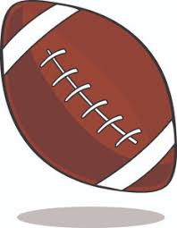

Dear NFL GM's... Draft a UGA player
UGA football has been pumping out top prospects into the National Football League for many years and always has key players on the best teams. In 2016, Malcolm Mitchell of the New England Patriots was a key player for the team on their way to a Super Bowl Ring. Todd Gurley was the Offensive player of the year in 2017 and arguably should of won MVP honors. This is no mere coincidence of the past few years, veterans in the NFL such as Geno Atkins and Thomas Davis are still pivotal players for their respective teams. Georgia had five players in the 2018 Probowl, three Super bowl MVP's, multiple offensive and defensive players of the year, two hall of famers, and many more honors to go around.
| Player Name | 40 time | Vertical Jump | Broad Jump |
| Lorenzo Carter | 4.5 Seconds | 36 Inches | 130 Inches |
| Roquan Smith | 4.51 Seconds | N/A | N/A |
| Sony Michel | 4.54 Seconds | N/A | N/A |
| Nick Chubb | 4.52 Seconds | 38.5 Inches | 128 Inches |
| John Atkins | 5.38 Seconds | 24 Inches | 89 Inches |
Click here to see how all invited UGA football players fared in the 2018 Combine.
This draft class (2018) is full of potential stars and starters on both sides of the ball. Nick Chubb and Sony Michel are the obvious highlights of the offensive players, who will both be studs on any NFL team. Nick Chubb had a faster 40 yard dash than Antonio Brown, perennial all star on the Steelers. He also had the same vertical jump score as Julio Jones and Odell Beckham. Standouts on Defense include Lorenzo Carter, Roquan Smith, and Trenton Thompson. They all posted insane results on all drills challenges they participated in. All of these players contributed highly to UGA's championship run and they will continue to do that at the highlest level of the sport.
The biggest sleeper of the UGA draft class is Isaiah Wynn who started at Guard for the Dawgs. At 6'3" with 33 3/8" arms, 8 1/2" hands and 313 pounds he will likely become an instant starter for any team who drafts him. Film and drills suggest that even a little undersized he handles his own in the trenches. Sony and Nick attritube a lot of their success to the offensive line and at times have had high praise for Wynn. Scouts have him ranked as the highest rated player in UGA's class and one of the best offensive linemen in the whole draft class.
